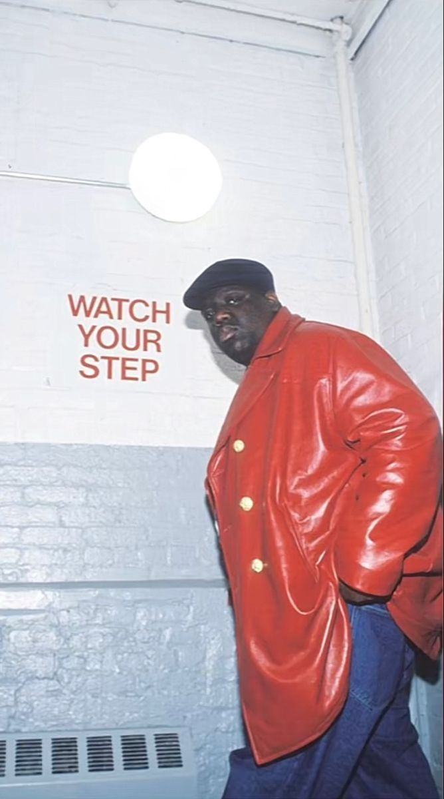

.png)
The 90s was a transitional period for black people around the world, specifically hip hop. Hip hop began to expand in ways we could not imagine from fashion to dance to lyrical styles. Black people were given the opportunity to express themselves in ways they could not before. In the early 90s, producers began using audio editing software and digital effects to create new styles and to sample beats. Also, in the 90s artist created a new style of socially-conscious hip hop when they began rapping about political and social issues. These new ideas began the expansion of music that we see today. 90s music birthed many legends such as Tupac, Biggie and Aaliyah that are credited for “changing the game.” In the 1990s, the “hip-hop/rap” genre exploded to become, by far, the most common genre of music on the Billboard Hot 100 charts for two decades.
.gif)
The only thing Rap fans love besides Rap itself is arguing about it.
If someone asked you what music you would prefer to listen to if you had headphones glued to your ears for the rest of your life? What would you say?
You can’t even imagine how many people would prefer to play ’90s rap songs.
The 90s rap culture was legendary and still remains popular among millions of people.
Yeah, some people really, actually, seriously believe that hip hop is better today. But come on, isn’t this nonsense?
.jpg)
Sure, the technologies are advanced, and now there’s a lot of free music out there. And this music is good. But it’s the number of tracks posted every day that makes it hard to find some really good music nowadays. The rap culture has changed, and most of the things that were taken for granted at the time are gone. Now, when that era is gone, it becomes obvious how much better it used to be. You’ve probably heard that ’90s rap music was the golden era for Hip Hop. Artists from the ’90s, like Tupac Shakur, the Wu-Tang clan, Onyx, Lords of the Underground, Biggie Smalls, and many others, have changed the world in some ways through their music.

What Is Grunge Music?
grunge, genre of rock music that flourished in the late 1980s and early ’90s and, secondarily, its attendant fashion. The term grunge was first used to describe the murky-guitar bands (most notably Nirvana and Pearl Jam) that emerged from Seattle in the late 1980s as a bridge between mainstream 1980s heavy metal–hard rock and postpunk alternative rock.
Influenced by punk rock, by the hardcore-punk inheritors of its do-it-yourself ethic such as Hüsker Dü, and by the sound of 1970s heavy metal bands such as Black Sabbath, Led Zeppelin, and AC/DC, grunge came to fruition on Seattle’s independent Sub Pop record label as Mudhoney, Nirvana, Screaming Trees, and Soundgarden followed in the footsteps of the pioneering Northwestern band the Melvins.

1. Guitar sludge Heavy distortion and thunderous power chord riffs defined the electric guitar component of grunge, which was described as dirty or sludgy. This sound helped give rise to the term “grunge,” which is frequently credited to Mudhoney vocalist Mark Arm and Sub Pop Records co-founder Bruce Pavitt. Grunge guitarists like Soundgarden’s Kim Thayil steered clear of guitar solos and relied on distortion pedals and powerful amplifiers to deliver their signature sound.
2. Minimal drum kits. Grunge bands steered clear of the elaborate percussion rigs favored by ’80s rock bands and utilized minimal drum kits that required skill and tremendous power to deliver the overwhelming grunge beat. Drummers like Dave Grohl and Matt Cameron of Soundgarden used four- and six-piece drum kits during the grunge years.
3. Intense vocals. Kurt Cobain’s vocal style—a slurred, growling delivery that could rise to a stunning bellow—largely defined grunge vocals and was echoed in varying degrees by singers like Cobain’s wife, Courtney Love of Hole, and Alice in Chains vocalist Layne Staley. Pearl Jam’s Eddie Vedder and Soundgarden’s Chris Cornell added a muscular vibrato to the sound.
What Elements of Popular Culture Did Grunge Music Affect?
.gif)
Grunge clothing reflected the lower- to middle-class backgrounds of its performers and listeners. The look could be seen daily on the streets of Seattle: plaid flannel shirts and ripped jeans culled from area thrift stores.
Female rockers like Courtney Love and Kat Bjelland of Babes in Toyland also helped popularize a look that mixed ’50s girls fashion, like babydoll dresses, with ’70s glam touches like slips as overgarments.
In ’82, Grandmaster Flash & The Furious Five recorded a track, The Message. It is believed that in this song, for seven minutes, the whole truth is told about the hardships of the life of black youth, who are trapped with drugs, prostitution, prison, and early death in the slums of New York.
The authors were justifiably proud that they did not hide the bitter truth: The Message, each verse of which ended with the refrain “Don’t push me\’Cause I’m close to the edge,” quickly took fourth place on the Billboard charts (they were called Hot Black Singles at the time).
Mainstream designers adopted grunge fashion to much critical derision.


The American grunge scene influenced a subgenre of Australian fiction in the 1990s that came to be known as grunge lit.
Like the music, grunge lit focused on disenfranchised young people looking for and often failing to find meaning in their everyday lives.
Poverty, drugs, and nihilism were often touchstones for novels like Praise by Andrew McGahan, The River Ophelia by Justine Etler, and Eric Dando’s Snail.
As seen on album covers and concert flyers, grunge rock graphics drew heavily on the Xerox aesthetics of the ’70s and ’80s punk.
Blurred photos, hand-drawn iconography, and mismatched font types created a look that suggested a gritty, handmade realism.
The grunge graphic design quickly rose from underground zines to mainstream publications and advertising.
Like hip-hop, grunge forged a connection to music like folk and punk by focusing on socially conscious subjects.
Feminism and liberalism were espoused by grunge bands, which also brought to the forefront many challenges faced by its listeners, including substance abuse, alienation, and homelessness.

Notable Grunge Albums
Mother Love Bone frontman : Andrew Wood died of a heroin overdose in March 1990, at age 24, mere days before his band was set to release this debut album.
His passing proved to be a particularly pivotal event in the history of grunge. Soon after, Mother Love Bone guitarist Stone Gossard and bassist Jeff Ament became demo-trading pen-pals with a San Diego gas-station attendant named Eddie Vedder, marking the beginning of Pearl Jam. And who knows:
If the psychedelically inclined Wood had survived, it’s entirely possible that Seattle would be better known today for floral patterns and cosmic power ballads than flannel and dropped-D tuning.
Before, rap was developing naturally, based on competition and creativity. Now, they jump from one trend to another, from krunk to sing-songy rap, etc. Today hip hop became corporate, as most of the famous worldwide artists are all about money, bragging about drugs and women.
Smashing Pumpkins: Gish (1991)
And they were cohesive. At the time, they wanted a great single but also wanted the album to be cool. They wanted their albums to tell a story, wanted them to have a theme, a purpose. I think it was important then, and we can only wish it was more important now. You could listen to one song and then smoothly move on to the next song. Now it seems like 12 different people have recorded 12 different songs.
Who Dominated 90s Grunge?
1. Nirvana
As arguably the most successful mainstream grunge band, Nirvana is synonymous with the genre. Their second album, 1991’s Nevermind, burst onto the airways as a surprise success and cultural phenomenon, making the group a household name. The band sold 30 million albums during their meteoric rise to the big time and “represented the leading edge of a
movement born in the sub-basement of ‘70s punk and ‘80s underground,” according to BBC Culture. While Nirvana achieved mainstream success, the band’s lead singer Kurt Cobain struggled with mental illness, a nasty stomach condition, and
heroin addiction throughout his career; he died by suicide in 1994. Still, the impact Nirvana had on the musical (and pop culture) landscape of the ‘90s was immense and can still be felt to this day.
2. Green River
Green River (a name reportedly inspired by the Green River Killer) is another group behind the birth of the Seattle scene. Hailed by many as the first grunge band, they released their debut EP Come On Down in 1985 and helped boost the indie prestige of the Sub Pop label with their follow-up EP,
Dry As a Bone, in 1987. The group‘s first—and only—full-length album, Rehab Doll, came out in 1988, but didn‘t make much of a commercial impact; they broke up shortly after its release.
Green River would turn out to be more than just a footnote in grunge history, however: After they disbanded, ex-members Jeff Ament, Stone Gossard, and Bruce Fairweather went on to form Mother Love Bone in 1988, with Ament and Gossard later performing with Temple of the Dog and Pearl Jam, respectively.
They weren‘t the only ex-members who would continue to flesh out that nascent grunge sound either, as fellow ex-members Mark Arm and Steve Turner teamed up to start Mudhoney, another seminal band from the era.
3. Soundgarden
Established in 1984 in Seattle, Washington, Soundgarden was one of the original groups to release an album on Sub Pop Records, the Seattle label that helped put grunge on the map. Soundgarden’s EPs on the label inspired Kurt Cobain to start recording Bleach, Nirvana’s debut album, with Sub Pop in December 1988. While Soundgarden’s early success was dwarfed
by the swift rise of Nirvana in the early ‘90s, the band was thrust into the spotlight with their 1994 album, Superunknown, thanks to the breakout single “Black Hole Sun.”
Though the group disbanded in 1996, shortly after the release of their self-produced album Down on the Upside, they reunited in 2010 and released their final studio album, King Animal, in 2012. Frontman Chris Cornell passed away in 2017, but the band‘s music is remembered as helping to carve out a sludgy, more guitar riff-centric sound within the grunge genre.
4. Alice in Chains
Alice in Chains was one of the heavier-sounding bands to emerge during the grunge era, in part due to its metal roots (original vocalist Layne Staley was in the ‘80s glam metal band Sleze, which was later rechristened Alice N‘ Chains). Their first album, 1990‘s Facelift, technically preceded Nirvana’s Nevermind, but didn‘t race up the charts as the latter did. The
band went on to explore other sounds, like acoustic music with their EP Jar of Flies in 1994. “We all play rock music, so there is some similarity,” guitarist and co-vocalist Jerry Cantrell told Rolling Stone in 1992 of the grunge scene. “Ours is a little more brooding and introspective.” While the band enjoyed major success as the ‘90s wore on, there were heightened tensions within the
group due to Staley‘s substance abuse and they went on hiatus around 1996. They later reunited (with vocalist William DuVall replacing Staley, who died in 2002) and a seventh studio album is said to be in the works.
5.The Smashing Pumpkins
While The Smashing Pumpkins enjoyed tremendous success during the grunge era, the band is hard to define musically and drew heavily from goth and metal influences. They released their second single, “Tristessa,” on Sub Pop in 1990, but found mainstream success after signing with Virgin Records in 1991 and releasing 1993’s Siamese Dream, which included hits like “Today” and “Disarm.” The 1995 double album Mellon Collie and the Infinite Sadness graduated the band to stadium shows.
Like other frontmen of the era, lead vocalist and guitarist Billy Corgan struggled with his mental health, and by the end of 2000, the group officially disbanded. In 2005, Corgan took out full-page ads in the Chicago Tribune and Chicago Sun-Times, announcing his plans to reunite the band, and they subsequently released five albums, including 2020‘s Cyr. While the group has gone through many different lineups and projects over the years,
The Smashing Pumpkins are best remembered for their genre-bending music, which stood out amid early ‘90s grunge bands.
After all, I could give you a million reasons why modern rap is nowhere near the ‘90s rap, but the evidence speaks for itself. Nothing sounds and feels the same as old-school rap. Even after a few decades, this music can get the party started even if the crowd has never heard these tracks before.
The ‘90s artists have shaped rap music and culture. This was a decade full of legends when the style of production was more gritty, and the music industry was less formulaic than it is now.